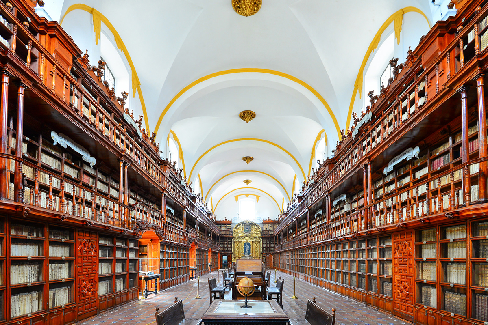

Ateneo Latinoamericano
Inicio
Sobre el Ateneo
¿Quiénes somos?
Noticias
Contacto
☰
×
Hacete socio
Biblioteca
Planificación anual
Contacto
Boletín del Ateneo
Orgullosamente atraídos por Latinoamérica
❮
Planificación anual
Próxima sesión

Recomendaciones bibliográficas
Recomendaciones y recursos
❯